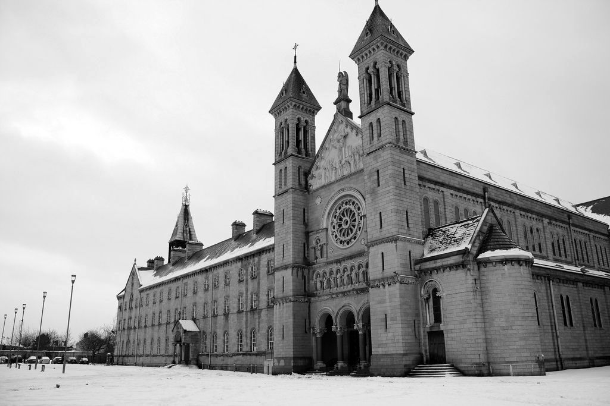
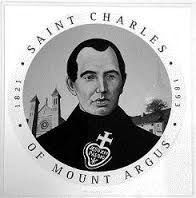
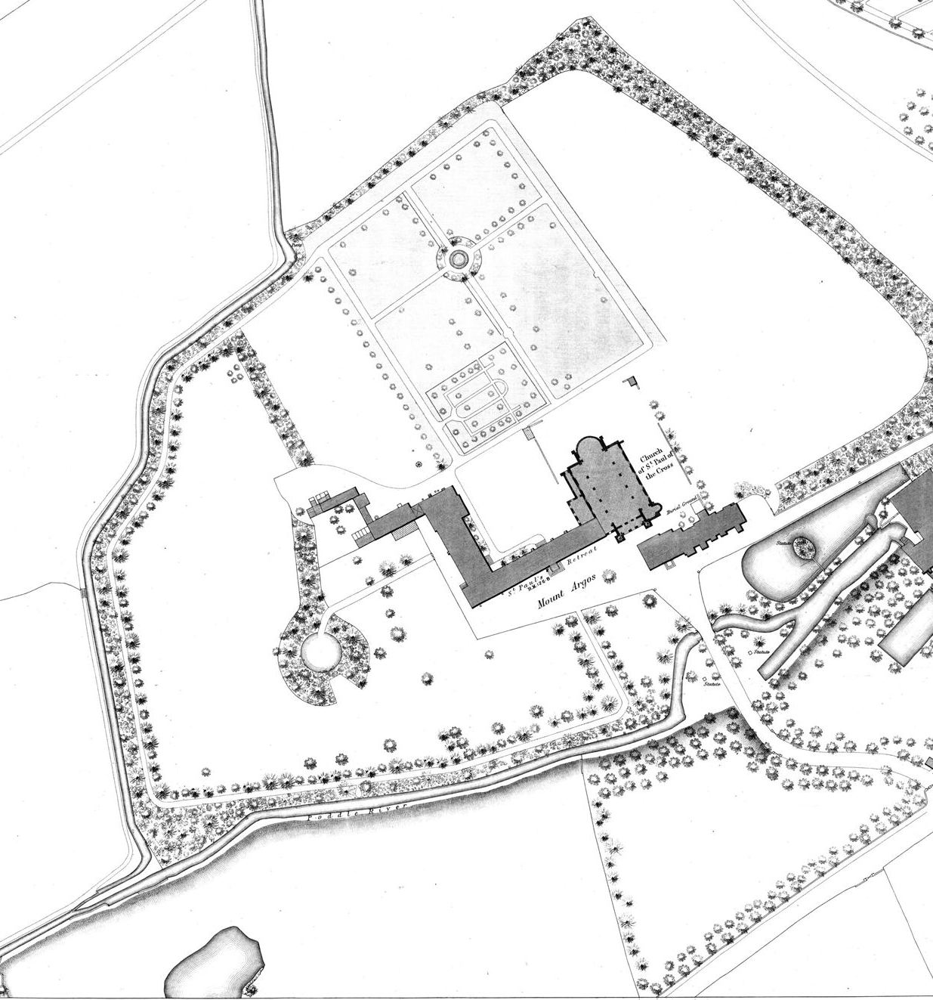

Stop 10 of 18 · Harold’s Cross
Mount Argus
Flood defences in a park, beside the church of a saint.
Mount Argus Park
Past the Stone Boat, most of the Poddle’s flow enters the grounds of Mount Argus. Here modern flood-control features sit in parkland, and this is the last easily reached stretch of the river before its long run underground begins. Dublin Corporation’s minutes for 1979 record the river at Mount Argus being included in an amenity improvement scheme.
Mount Argus
Mount Argus, in Harold’s Cross, was the first Passionist monastery in Ireland, founded in 1856. The present church was built between 1873 and 1878 and dedicated to St Paul of the Cross in 1878.
Mills at Mount Argus
In the monastery grounds the Poddle once fed a pond and a millrace. Harold’s Cross was then a small mill village: a paper mill worked at Mount Argus in the 19th century, and Loader’s Park Mills, a corn mill on Kimmage Road Lower, stood where the Waterwheel apartments are now. On Mount Argus Road a former flour mill later became a laundry, and is now apartments. The old Mount Argus mill, long disused, was taken over in the 20th century by the 45th Mount Argus Scout Troop as a boxing club.
Saint Charles
Charles Houben arrived at the newly founded monastery on 9 July 1857. Known for his gift of healing, he drew as many as 300 people a day to Mount Argus to be blessed.
He died there on 5 January 1893, aged 71. Hundreds of cures were credited to him in his lifetime and after. He was beatified by Pope John Paul II in 1988 and canonised by Pope Benedict XVI on 3 June 2007. In 1949 his remains were moved into the church, where they can still be visited.
The first Mount Argus
The first Mount Argus was a tall red-brick house on a few acres through which the Poddle “lazed”. It belonged to Mrs Elizabeth Byrne, a widow and a cousin of Cardinal Cullen. At the suggestion of Father Matthew Collier, a curate in Rathmines, and with the Cardinal’s consent, the Passionists set up their house there in 1856. The old house and its temporary church stood where the community’s cemetery is now. The first Mass was said in August 1856 by Father Paul Mary Pakenham, a son of the second Earl of Longford, who had been a captain in the British Army before he became a Catholic.
Source: Irish Independent, 16 October 1956.
Loader’s Park Mill
Loader’s Park Mill stood beside the grounds of Mount Argus. A “C. Mill”, a corn mill, is marked here on Rocque’s map of 1760; by 1843 it was a paper mill, and the 1911 Ordnance Survey map shows a corn mill again. The Gothic stone scout hall at the back entrance to Mount Argus, on Mount Argus Road, seems to have been part of the mill and was standing by 1843. Patrick Pearse is said to have taught Irish there. The ruined mill and a few small cottages, perhaps for the mill workers, survived until the late 20th century.
Kimmage Road Lower
Kimmage Road Lower runs from Kimmage Cross Roads to Harold’s Cross Road. The first Ordnance Survey map, of 1837, shows cottages along it, and the terraces at its northern end were built in the late 19th and early 20th centuries. The river runs close beneath them.
On a Saturday in February 1910 the Poddle overflowed on high ground near Mount Argus and poured down the Upper and Lower Kimmage roads, three or four feet deep in places. The Rathmines township sent a “float” that spent the evening ferrying people “from shore to shore”. In March 1937 the fire brigade was pumping out houses here again.
On 29 November 1985 Maureen Cooke opened her front door at 9 Kimmage Road to find a hole ten feet square where part of her garden had been. The culvert carrying the river, less than six feet under the front gardens, had collapsed.
Source: Irish Independent, 21 February 1910; Irish Press, 13 March 1937 and 30 November 1985.
From the planning file
Facts from the flood scheme’s planning application and four local planning files.
Poddle People
- Saint Charles of Mount Argus: The healer by the river
Parts of this page draw on research by the volunteers of the Crumlin and Walkinstown History Group, shared with poddle.ie. About their research.



